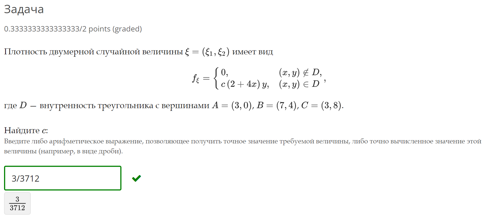

Теория вероятностей для Элджернона
В этам курсе по аналитеке даных внизапно есть тервер. Я ни ожидал токова аткравенова придательства ат таких на первый взгяд преличных припадавателей. Вот они и паказали сваи настаящие лица. Лица каторые давольно улыбаюца видя страдания прастых смертных. Буду сдеся песать штото терверское што сначала нипонел а патом понел. Дапускаю што так ничево и не напешу.
11 октября 2022
Ришал задачу. Тама надо многа всево, но я пока зделал только одно. Нашол коэфицент. Вот задача.

Задача как задача. Вначале я зделал график, штобы штонибудь понять. Понел я много: это треугольник и он равнобедрен. Это мне некак не помогло, но я понел.